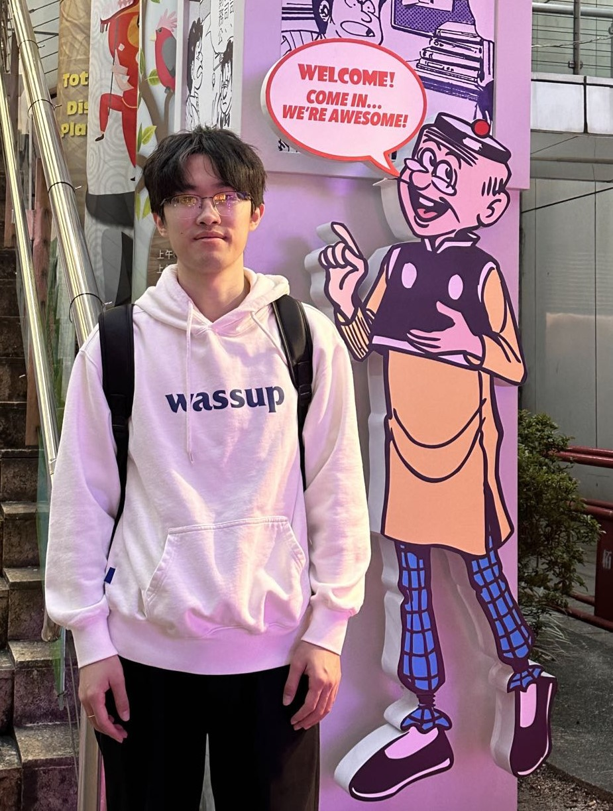
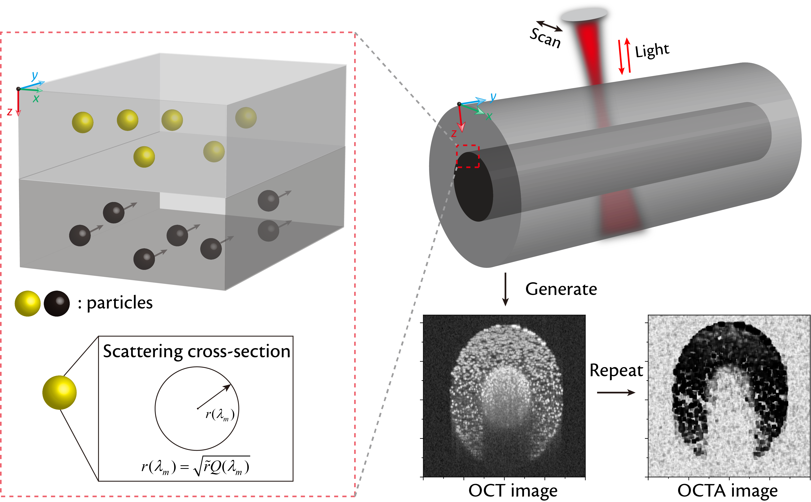
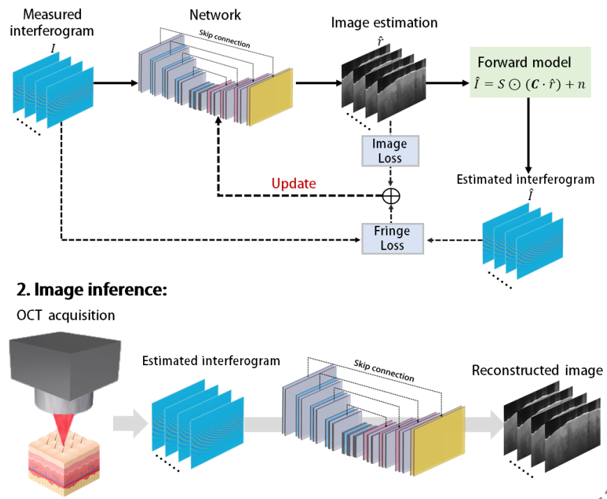
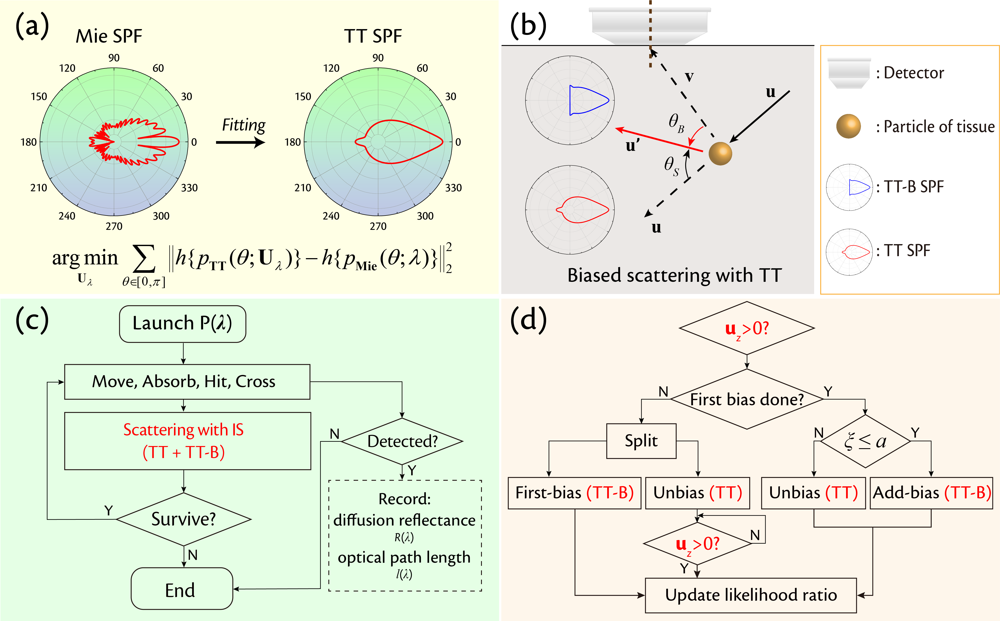
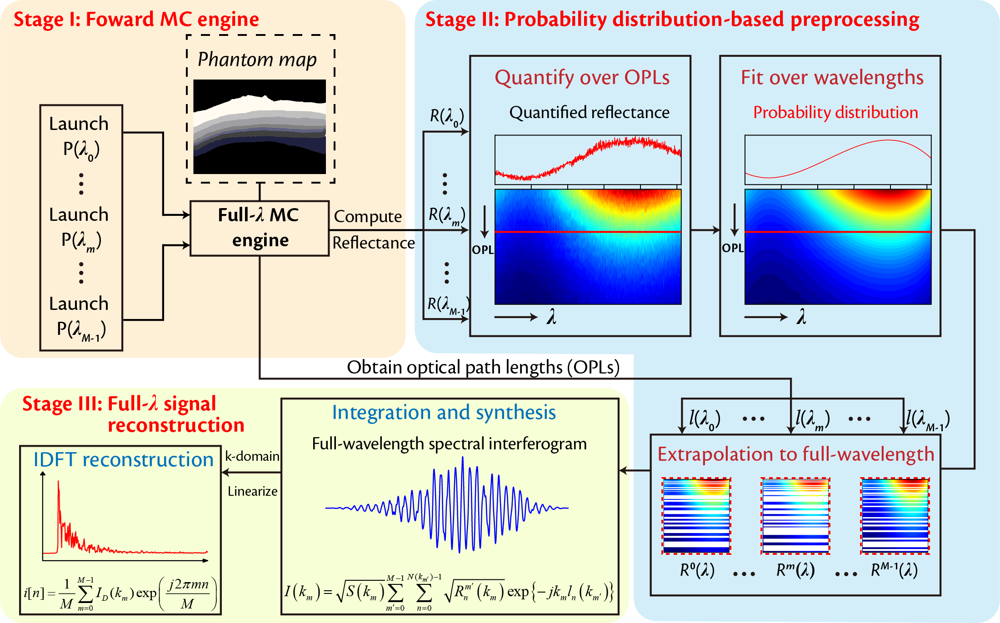
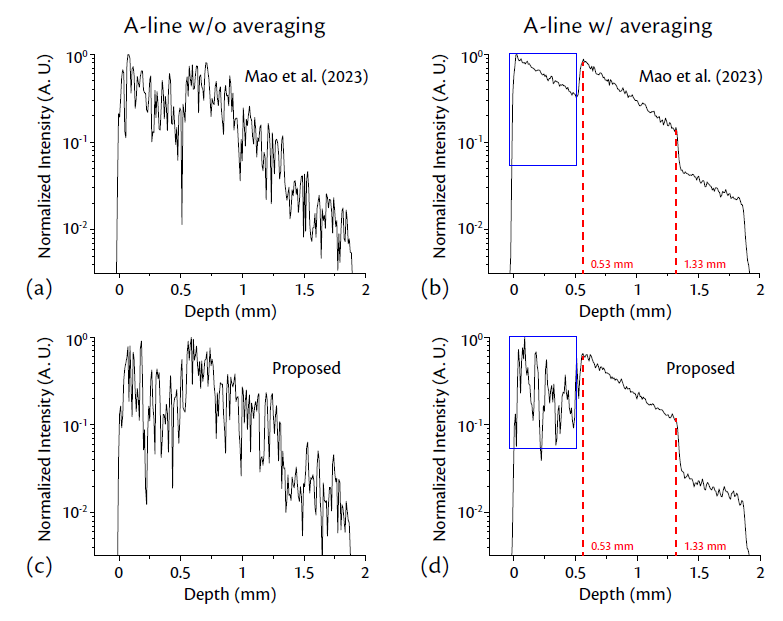
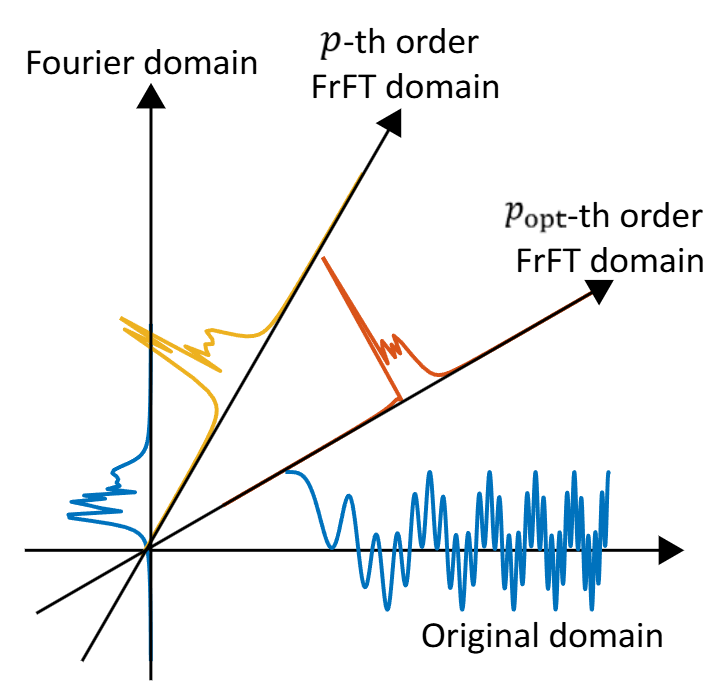
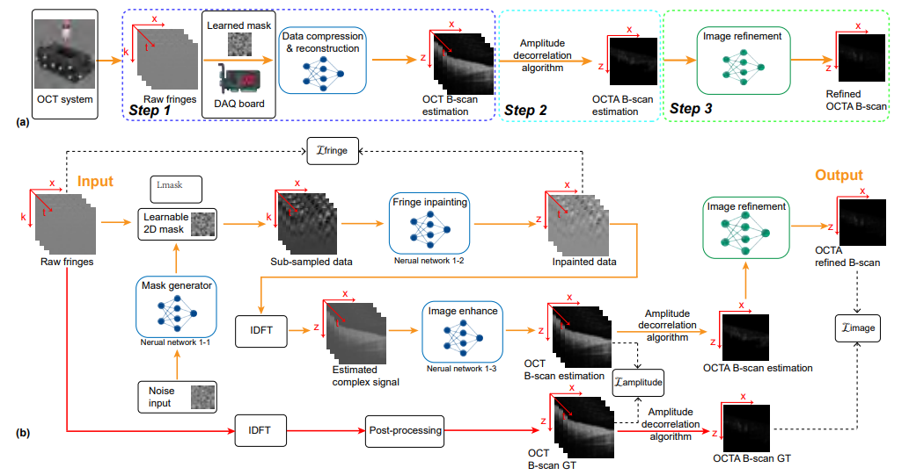

|
Jianing Mao
I am currently a final-year PhD student in Department of Electronic Engineering, Shanghai Jiao Tong University, supervised by Prof. Yuye Ling.
Before that, I received the B.Eng. degree in Communication Engineering from Hunan University in 2020.
My research interests include biomedical optics and computational imaging. I am currently engaged in theoretical research on the interaction of light and tissue in Optical Coherence Tomography (OCT).
CV /
Email /
GitHub /
ResearchGate
|

|
|

|
Monte Carlo-based realistic simulator of optical coherence tomography angiography
Jianing Mao, Hang Su, Ping Xue, Yuye Ling*
Biomedical Optics Express (BOE), 2025 (Editor's Pick)
paper /
code
|
|

|
Physics-guided deep learning-based real-time image reconstruction of Fourier-domain optical coherence tomography
Mengyuan Wang Jianing Mao, Hang Su, Yuye Ling\*, Chuanqing Zhou\*, Yikai Su
Biomedical Optics Express (BOE), 2024
paper /
code
|
|

|
Importance sampling-accelerated simulation of full-spectrum backscattered diffuse reflectance
Jianing Mao, Yuye Ling*, Ping Xue, Yikai Su
Biomedical Optics Express (BOE), 2023
paper /
code
|
|

|
Monte Carlo-based full-wavelength simulator of Fourier-domain optical coherence tomography
Jianing Mao, Yuye Ling*, Ping Xue, Yikai Su
Biomedical Optics Express (BOE), 2022
paper /
website
|
|

|
Monte Carlo-based realistic modeling of speckles in Fourier-domain optical coherence tomography
Jianing Mao, Yuye Ling*, Ping Xue, Yikai Su
SPIE Photonics West (SPIE PW), 2024 (Best Paper Award)
paper
|
|

|
Robust and automated dispersion compensation for FD-OCT using fractional Fourier transform
Yufan Li, Yuye Ling*, Jianing Mao, Yikai Su
SPIE Photonics West (SPIE PW), 2024
paper
|
|

|
Data Bandwidth Improved Optical Coherence Tomography Angiography via Learnable Spectral-Spatial Sub-Sampling
Hang Su, Jianing Mao,
Yuye Ling*, Yikai Su
OSA Biophotonics Congress, 2024
paper
|
- ShangJun Scholarship, 2024
- Best Paper Award in Optical Interaction with Tissue and Cells, SPIE Photonics West, 2024
- Student Travel Grant, SPIE Photonics West, 2024
- Best Student Paper Award, PIBM conference, 2023
- Second Prize in “Huawei Cup” The 17th China Post-Graduate Mathematical Contest in Modeling, 2020
- Outstanding Graduate Award of Hunan Province, 2020
- Outstanding Graduate Award of Hunan University, 2020
- TA in SJTU EE367: Fundamentals of Communication Circuits, Spring 2022
- TA in SJTU EE367: Fundamentals of Communication Circuits, Spring 2021
|